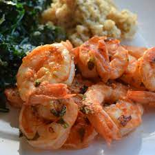

HOME
Marinated Grilled Shrimp Recipe

Description:
This marinade is so simple and easy to create that you won't even need cocktail sauce with your shrimp! Don't be alarmed by the cayenne pepper; you won't even notice it. My two and four-year-olds adore it, and they consume more shrimp than their parents! It's also a tremendous hit with guests and simple to make. If the weather isn't cooperating, I cook this with frozen or fresh shrimp on an indoor electric grill. Serve with a salad, baked potato, and garlic bread as a side dish. You will not be let down!!!
Ingredients:
- 3 cloves garlic, minced
- ⅓ cup olive oil
- ¼ cup tomato sauce
- 2 tablespoons red wine vinegar
- 2 tablespoons chopped fresh basil
- ½ teaspoon salt
- ¼ teaspoon cayenne pepper
- 2 pounds fresh shrimp, peeled and deveined
- 6 each skewers
Steps:
-
Combine the garlic, olive oil, tomato sauce, and red wine vinegar in a large mixing bowl.
Add basil, salt, and cayenne pepper to taste.
Stir the shrimp in the bowl until they are equally coated.
Refrigerate for 30 minutes to 1 hour, stirring every 30 minutes or so.
-
Preheat the grill to medium.
Using skewers, thread shrimp onto them, piercing them once near the tail and once near the head.
Remove the marinade and discard it.
-
Grease the grill grate lightly.
Cook shrimp for 2 to 3 minutes per side on a hot grill, or until opaque.